Field notes / sourced from a curated Pinterest research board
Design Trend Field Guide
Ninety-one pins from one board, sorted into nine working categories — not just a moodboard to admire, but a set of filed specimens with a suggested next move and a dated, honestly-rated link log attached.
Ten named directions, each with a one-line definition of what actually makes it read as that style: analog chaos, doodlecore, neofolk aesthetic, fluid liquid glass, gradient bloom, zinegeist, tactile analog warmth, acidcore, technical futurism, neobrutalist utilitarian.
Where it fits
Naming a direction inside a brief. Prompting an image generator with a coherent look instead of loose adjectives. Sorting your own screenshots into a personal taxonomy.
Practice move
Pick one name a week and build a single test shot that could only be filed under that name — nothing else.
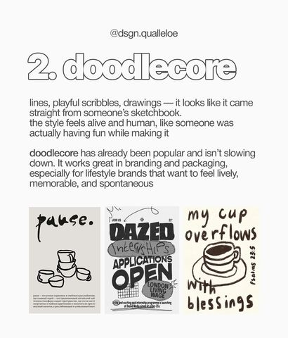
doodlecore — sketchbook lines, playful and human
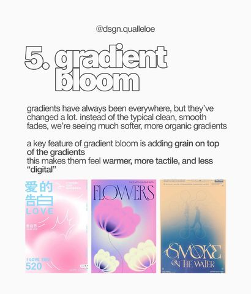
gradient bloom — grain over soft organic gradients
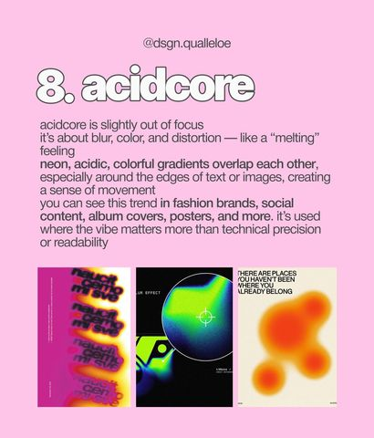
acidcore — blur, distortion, melting neon edges
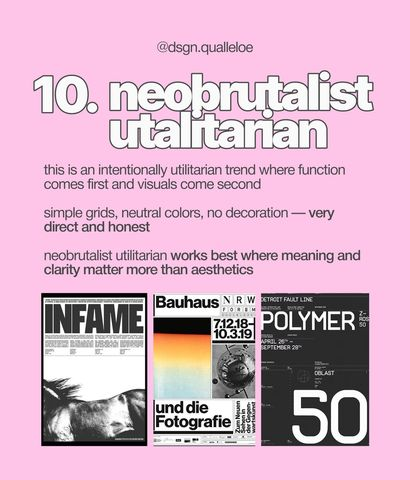
neobrutalist utilitarian — grids, no decoration
02
Posters & Event Bills
21 pins
the largest single cluster on the board
One-page announcements for talks, gigs, sales, exhibitions and clubs. The pattern repeats: type stacked at poster scale, one dominant color block, a photo or mark doing the emotional work, small print carrying the logistics.
Where it fits
Any single-page announcement — a meetup, a sale, a sign-up sheet, a gig flyer, an exhibition save-the-date.
Practice move
Take one real upcoming event and design its poster three times using three different pins as the structural skeleton — same content, different bones.
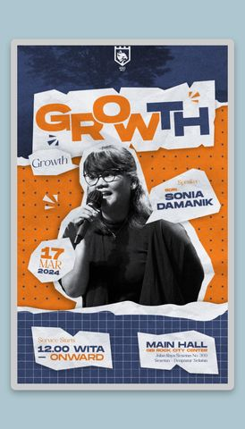
talk poster — torn-collage portrait + tape marks
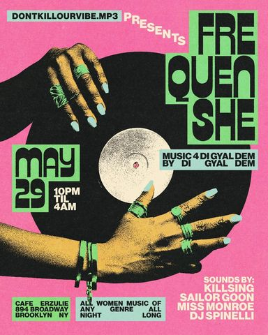
club night — single hero graphic, saturated duo-tone
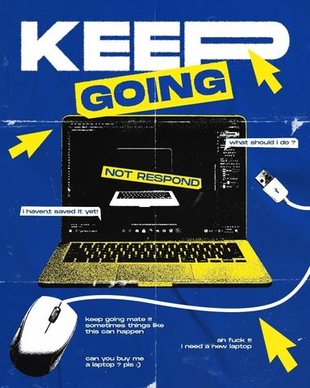
retail meme poster — big type, deadpan copy
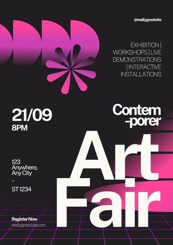
exhibition bill — gradient mark as the whole identity
03
Type & Font Pairing
9 pins
reference charts + type-only posters
Charts pairing a serif and a sans by mood — “bold & impactful,” “simple pleasure,” “clean lines” — sitting next to posters where oversized type alone carries the entire composition, no imagery needed.
Where it fits
Picking a two-font system for a brand or deck before touching layout. Practicing type-only poster composition.
Practice move
Find the two Google Fonts that reproduce a pairing you like, then set your own headline in them before designing anything else.
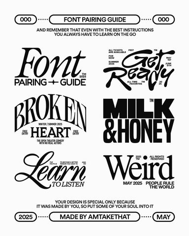
pairing guide — serif + display, moods labeled
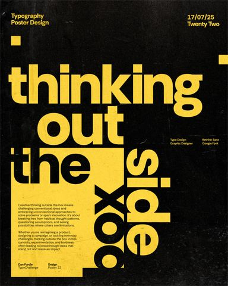
type-only poster — scale and overlap as the layout
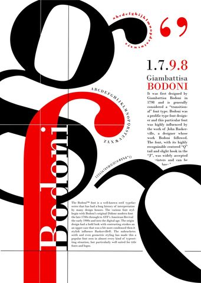
specimen poster — one typeface, treated as subject
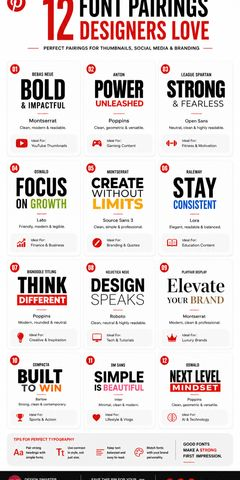
swipe chart — twelve pairs, tagged by feeling
04
Brand & Editorial Systems
7 pins
identity kits + keyword moodboards
A full identity kit laid out as one reference sheet — fonts, color chips, image crops, layout zones — next to keyword moodboards (editorial design, naive design, mixed media, bold minimalism) that each collage four or five looks sharing one idea.
Where it fits
Building a one-page brand guide before a client project starts. Briefing a moodboard instead of describing a vibe in words.
Practice move
Build one identity sheet, structured like the kit here, for something you actually use daily — your notes app, a side project. Fonts, three colors, one layout rule.
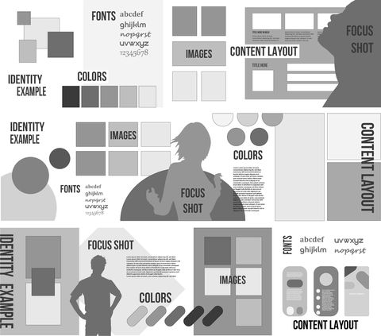
identity kit — fonts, colors, crops, layout in one sheet
The same collaged, torn-paper aesthetic packaged two ways: as raw inspiration (digital scrapbook, y2k design, halftone poster) and as a ready-made starting point (Canva categories like mixed-media collage, content-creator, white notes).
Where it fits
Instagram carousels, story templates, a personal-brand feed that needs a repeatable but not robotic look.
Practice move
Open one of the referenced Canva categories, build a real post from it, then hand-edit it until it stops looking like the template.
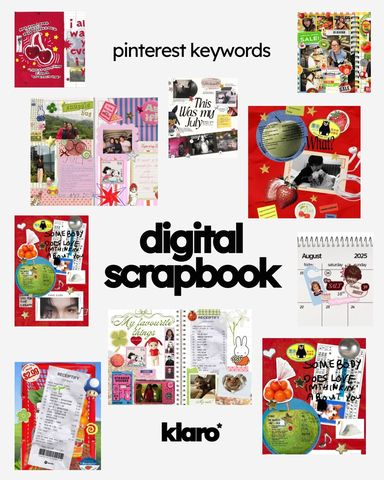
“digital scrapbook” — keyword reference card
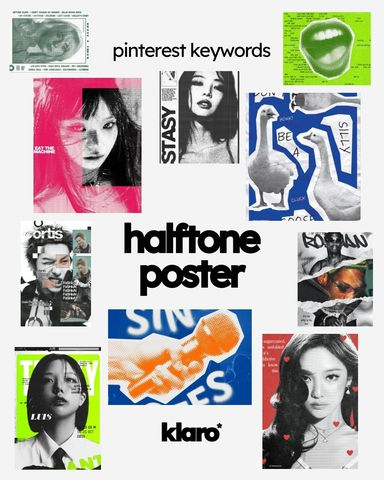
“halftone poster” — keyword reference card
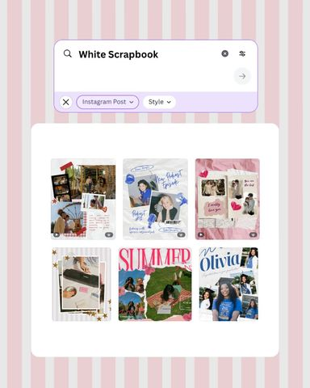
Canva category — “white scrapbook”
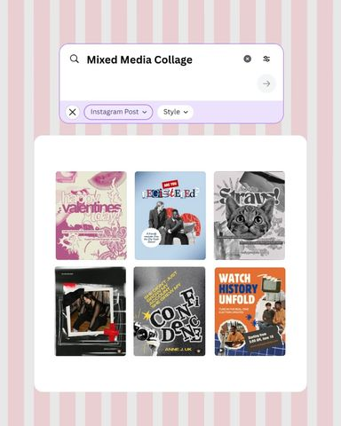
Canva category — “mixed media collage”
06
Websites & Tools
13 pins
two “roundup” carousels
Niche web tools worth knowing — a digital care-package builder, a pixel-art canvas, an aesthetic photo calendar, a fake-newspaper-clipping generator — useful on their own, and a proven content format in themselves.
Where it fits
Personal inspiration breaks. Also a ready template for your own newsletter or carousel — “N tools worth your Friday afternoon.”
Practice move
Actually open three of these sites this week and screenshot what you make — raw material for your own version of this carousel.
one instructional carousel — the advice under everything else here
A short, direct set on developing taste itself: absorb intentionally, capture everything, stack ideas, remember that nothing is 100% original. Less a trend, more the operating instructions for every other group on this page.
Where it fits
The practice behind the practice — how to keep a swipe file instead of just having one sitting unused.
Practice move
Start the habit this carousel describes: one folder, one screenshot a day, sorted weekly into groups like the ones on this page.
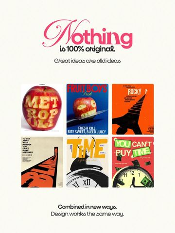
“nothing is 100% original”
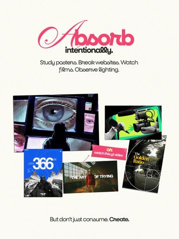
“absorb intentionally”
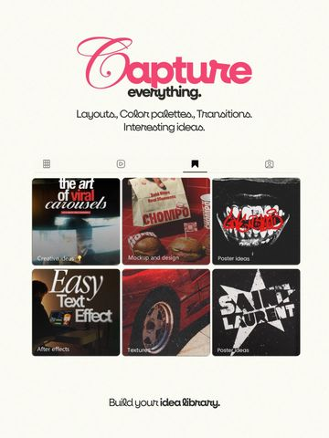
“capture everything”
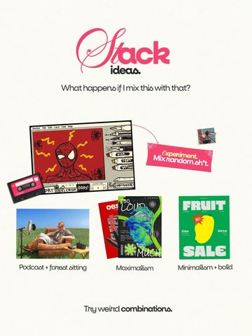
“stack ideas”
08
Character & Pop-Culture Art
6 pins
manga, VA posters, reimagined film covers
Manga hype pages, voice-actor posters and redesigned film covers (Fight Club, Vagabond) — high-contrast type layered directly over portrait photography or line art, closer to zine and fan-art conventions than corporate poster design.
Where it fits
Entertainment or fandom graphics, album or character art, anywhere a poster should feel underground rather than official.
Practice move
Redesign one movie poster you know well using the layering technique here — type as texture, not just a caption.
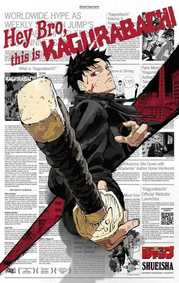
manga hype page — newsprint texture, tabloid type
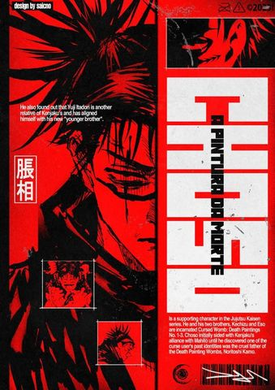
character poster — two-color, name as the mark
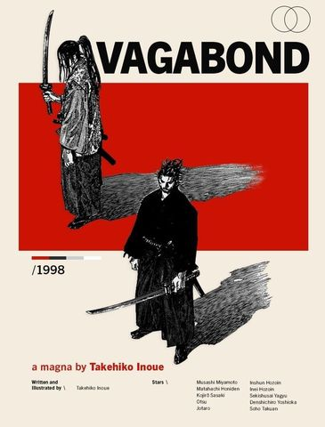
cover redesign — restraint, one color block
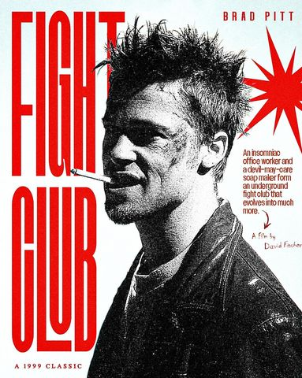
film poster redesign — type as the loudest element
09
Design Resource Stack
2 sources
@khaisa.kamal’s “starter pack 2026” carousel + a reposted TikTok tips clip (@klybdk) — both missed on the first bulk pass, recovered via direct pin links
Not inspiration — supplies. Two pins listing the actual apps, element libraries, texture sites and one-off generators behind everything else on this board: what to open when a pin says “collage” or “grain” and you need the raw material to make one yourself.
Where it fits
The step between choosing a direction (groups 01–04) and executing it — where the shapes, textures, fonts and palettes actually come from.
Practice move
Pull one texture from texturelabs.org and one shape set from spectrums.framer.website, and layer them behind a headline from group 03.
Every real link pulled off this board so far, dated, with an honest quality mark instead of pretending they’re all equally worth your time. Untested doesn’t mean bad — it means nobody has actually opened it yet.
Weekly review — how a row changes status
verified
Actually opened and used for something. Stays, and the scenario note gets sharper each time.
untested
Collected but not yet tried. Default state for anything new — the review picks a few of these to actually open.
cut
Tried and it didn’t hold up — dead, paywalled, or just worse than something already on the list. Removed on the next pass, not left to rot here.
Run this weekly, on whatever schedule suits you: open 3–4 “untested” rows, actually try them, re-rate them, and retire anything that’s “cut.” A log that never gets pruned just turns into a pile of dead links with extra steps.
logo-specific inspiration for a group 04 identity exercise
untested
Nothing matches that combination — try clearing a filter.
Turning this into practice
A reference like this is a collection; the nine groups above are what make it usable, and the log turns “usable” into something that stays true over time instead of quietly going stale. The fastest way to burn through a folder like this is to keep scrolling. The way that actually builds skill is slower: file, then make, then prune.
Start your own folder. A board, a handful of screenshots, a running note — whatever you actually keep. Sort it into groups like the ones above instead of one undifferentiated pile.
Pick one group a week. Not the whole thing — one filed category, so the reference stays specific instead of generic.
Do the practice move. Each group above has one attached. It’s scoped to be finishable in an hour, not a project.
Compare against the source. Hold your result next to the references it came from and be honest about what’s still generic.
Review weekly. Open a few “untested” entries in your own log, re-rate them, and retire whatever didn’t hold up — the same discipline this page tries to hold itself to.